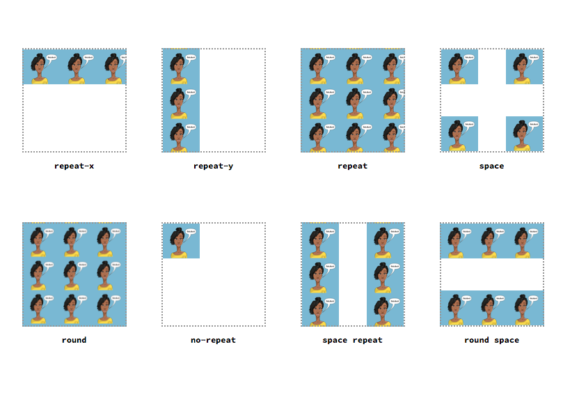
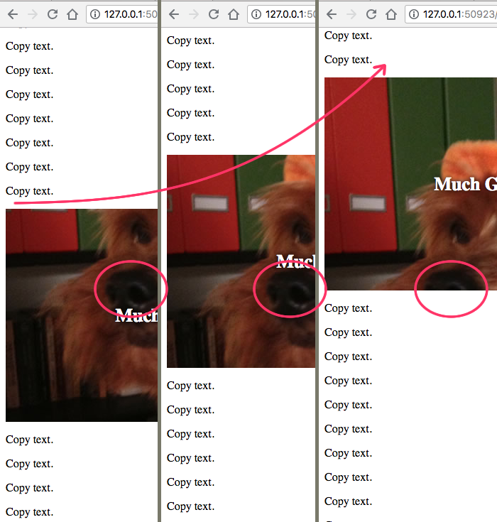
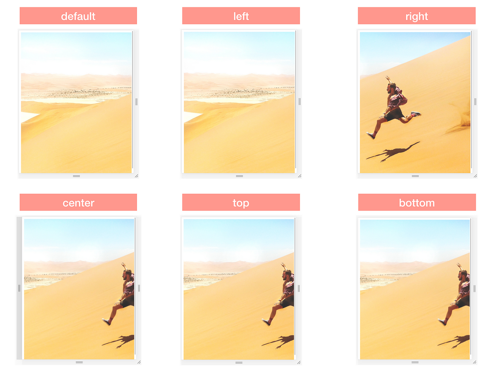
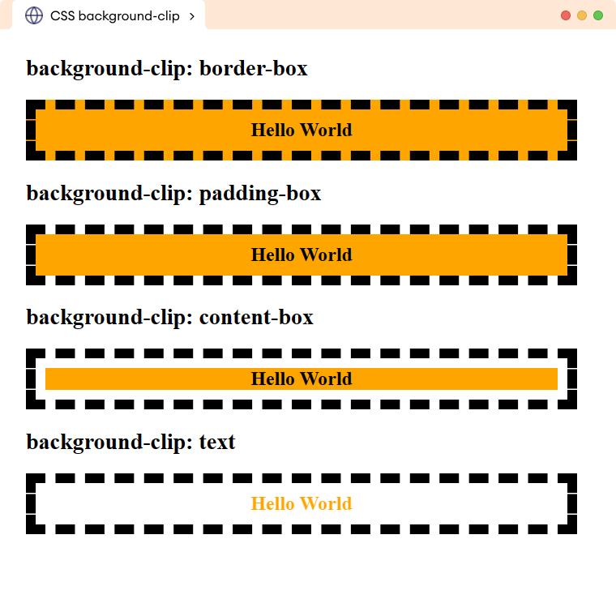
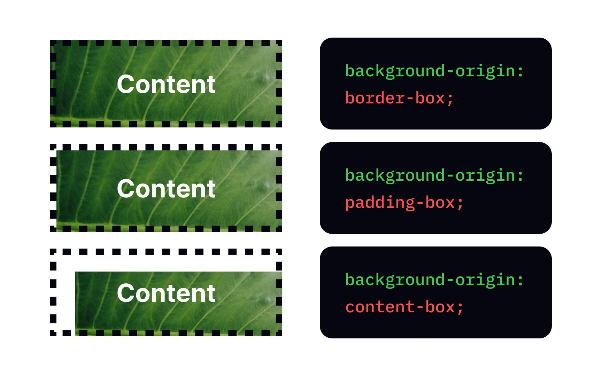
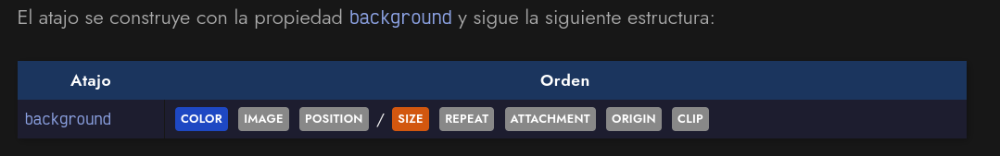
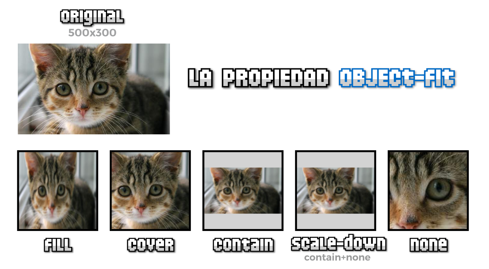
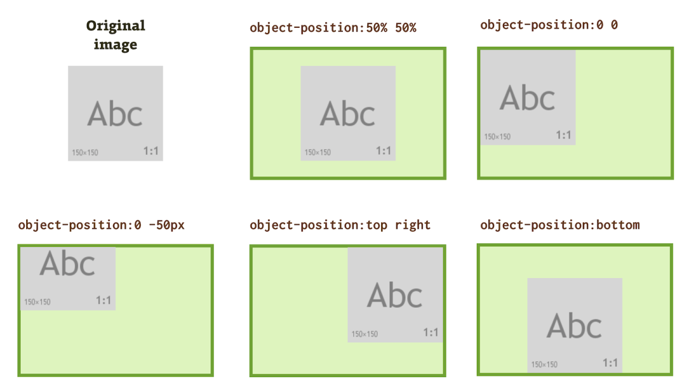
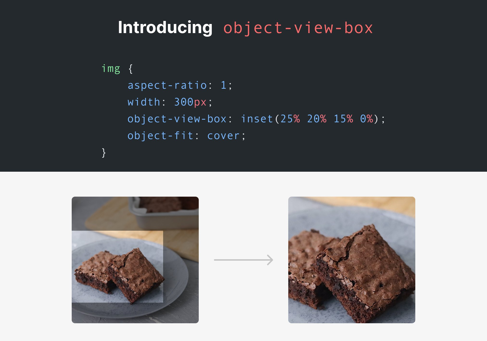

Propiedades CSS de las Imágenes
En el lenguaje de estilos, Cascading Style Sheets, más conocido como CSS, existen varias propiedades y opciones para poder editar una imagen, en este caso, se mencionará a dos propiedades: Background y los objetos.
Background
Como su nombre indica, es el trasfondo. "Background-image" determina cuál sería la imagen de fondo. De la misma rama de "background", hay otra serie de propiedades:
-
Background-repeat: establecer el modo en el que se repita la imagen de fondo, en caso de que sea pequeña
-
Background-attachment: Indicar si una imagen de fondo permanece fija o se desplazaría al bajar
-
Background-position: establecer una posición para el fondo
-
Background-clip: establece cómo se recorta una imagen de fondo
-
Background-origin: establece un modo de posicionamiento de la imagen
-
Background-size: establece un tamaño diferente a la imagen de fondo

-
Background: atajo general de todo lo mencionado anteriormente.
Objetos
Los objetos en CSS son las etiquetas de HTML: <img>, <video>, y si acaso, <textarea> e <input>. Varias de sus propiedades pueden ser:
-
Object-fit: modo en que se adapta el elemento.
-
Object-position: posición del elemento
-
Object-view-box: región del elemento que se visualizará